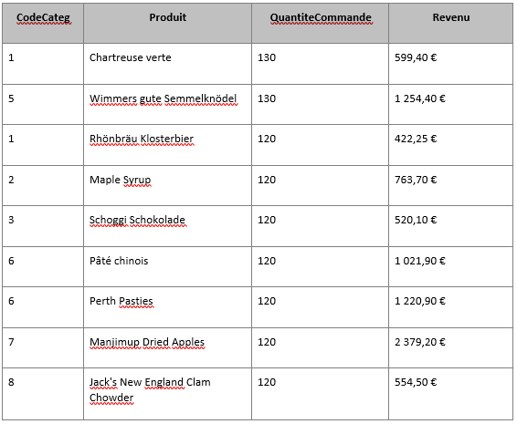

1) KDou s’intéresse aux desserts et aux boissons dans sa réflexion en lien avec la santé.
Interprétation : L’intérêt de cette requête est de savoir les boissons et les desserts qui sont coûteux et de voir si c’est possible de changer de fournisseur pour faire plus de bénéfice en changeant de fournisseur.
SQL :
SELECT DISTINCT P.RefProd, P.NomProd, F.Pays, P.PrixUnit
FROM Produit AS P INNER JOIN Fournisseur F
ON P.NoFour = F.NoFour
WHERE ((P.CodeCateg)=1 Or (P.CodeCateg)=3) AND ((P.PrixUnit)>=50)
ORDER BY P.PrixUnit, 1, 2, 3
;
| RefProd |
NomProd |
Pays |
PrixUnit |
| 129 |
Jus Kiwina |
Royaume-Uni |
52,00 € |
| 99 |
Pimm's Jojo |
Australia |
55,83 € |
| 20 |
Sir Rodney's Marmalade |
Royaume Uni |
67,50 € |
| 75 |
Rhönbräu Klosterbier |
Allemagne |
86,46 € |
| 2 |
Chang |
Royaume-Uni |
107,42 € |
| 35 |
Steeleye Stout |
États-Unis |
215,00 € |
| 38 |
Côte de Blaye |
France |
219,58 € |
| 87 |
Bratislava Vodka |
Royaume-Uni |
320,00 € |
Interprétation:L’intérêt de cette requête est de savoir où se concentre le marché des boissons et des desserts pour avoir un ordre d’idée sur les pays à privilégier pour se réapprovisionner en stock de boissons et de desserts.
SQL: SELECT DISTINCT F.Pays
FROM Fournisseur AS F INNER JOIN Produit AS P
ON F.NoFour = P.NoFour
WHERE ((P.CodeCateg)=1 Or (P.CodeCateg)=3)
| Pays |
| Allemagne |
| Australia |
| Australie |
| Brésil |
| Canada |
| Etats Unis |
| Etats-Unis |
| Finlande |
| France |
| Pays-Bas |
| Royaume-Uni |
| Singapour |
| Suède |
2) KDou se demande ce qu’il faut changer dans son offre, voici quelques indicateurs.
Interprétation: On s’intéresse ici au nombre de produits non commandés par catégories. On peut donc reprendre la requête de la question précédente en modifiant la jointure (car on a plus besoin de la table Fournisseur mais de la table Categorie) et en ajoutant un GROUP BY des éléments présents dans le SELECT et un COUNT(C.CodeCateg) (on peut aussi faire COUNT(C.NomCateg)) ce qui permet d’afficher le nombre de produits non commandés par catégorie.
SQL: SELECT C.NomCateg, COUNT(C.CodeCateg) AS Produit_Non_Commandé
FROM Produit AS P INNER JOIN Categorie C ON P.CodeCateg=C.CodeCateg
WHERE P.RefProd NOT IN (SELECT DC.RefProd FROM DetailCommande DC )
GROUP BY C.CodeCateg, C.NomCateg
| NomCateg |
Produit_Non_Commandé |
| Boissons |
27 |
| Condiments |
2 |
| Desserts |
3 |
| Pâtes et céréales |
2 |
| Poissons et fruits de mer |
2 |
Interprétation: On veut savoir quels sont les pays qui ont une offre importante de produits donc quels pays ont le plus de commande. On a besoin de 3 tables Fournisseur, Produit et DetailCommande. Ensuite il suffit de faire un COUNT de F.Pays ce qui affichera le nombre de commandes par pays.
SQL : SELECT F.Pays, COUNT(*) AS Commande_Par_Pays
FROM Fournisseur AS F INNER JOIN (Produit AS P INNER JOIN DetailCommande DC ON
P.RefProd=DC.RefProd ) ON P.NoFour=F.NoFour
GROUP BY F.Pays
ORDER BY COUNT(*) DESC
| Pays |
Commandes par pays |
| Allemagne |
420 |
| Canada |
232 |
| Italie |
230 |
| France |
227 |
| Etats-Unis |
186 |
| Royaume Uni |
163 |
| Japon |
155 |
| Australie |
143 |
| Australia |
133 |
| Norvège |
133 |
| Royaume-Uni |
124 |
| USA |
117 |
| Finlande |
92 |
| Espagne |
87 |
| Suéde |
74 |
| Etats Unis |
73 |
| Singapour |
71 |
| Brésil |
70 |
| Danemark |
56 |
| Pays-Bas |
35 |
| Suède |
23 |
3) KDou étudie les provenances de ses produits.
Interprétation:Cette requête permet à KDOU de voir le coût des produits qu’ils achètent en Allemagne et KDOU pourrait grâce aux noms des produits s’ils pourraient trouver ou non une alternative moins chères qui pourrait être plus qualitative.
SQL:SELECT Categorie.NomCateg, Produit.PrixUnit
FROM Fournisseur INNER JOIN (Categorie INNER JOIN Produit ON Categorie.CodeCateg = Produit.CodeCateg) ON Fournisseur.NoFour = Produit.NoFour
WHERE (((Categorie.NomCateg)="boissons" Or (Categorie.NomCateg)="desserts") AND ((Fournisseur.Pays)="Allemagne") AND ((Produit.PrixUnit)<100))
ORDER BY Categorie.NomCateg ;
| NomCateg |
PrixUnit |
NomProd |
| Desserts |
11,67 € |
NuNuCa Nuß-Nougat-Creme |
| Desserts |
26,03 € |
Gumbär Gummibärchen |
| Desserts |
36,58 € |
Schoggi Schokolade |
| Boissons |
86,46 € |
Rhönbräu Klosterbier |
Interprétation:Cette requête permet à KDOU de voir peut être si ces boissons et desserts ne sont pas accessible chez un autre fournisseur qui fait boissons et desserts en même temps. (autre interprétation) KDOU peut aussi utiliser ces requêtes pour comparer les prix entre ses différent fournisseurs et peut être si les prix sont trop élevés aller chez un autre fournisseur ?
SQL:SELECT DISTINCT Fournisseur.Contact
FROM Fournisseur INNER JOIN (Categorie INNER JOIN Produit ON Categorie.CodeCateg = Produit.CodeCateg) ON Fournisseur.NoFour = Produit.NoFour
WHERE (((Categorie.NomCateg)="boissons" Or (Categorie.NomCateg)="desserts"))
ORDER BY Fournisseur.Contact;
| Contact |
| Alyssa Messata |
| Anne Heikkonen |
| Bob Rego |
| Carlos Diaz |
| Chandra Leka |
| Chantal Goulet |
| Charlie Colley |
| Cheryl Saylor |
| Claudio Sole |
| Dirk Luchte |
| Guylène Nodier |
| Helena Carbo |
| Hug Jhonson |
| Ian Devling |
| Lars Peterson |
| Maric Bein |
| Melvin Wilson |
| Petra Winkler |
| Shelley Burke |
| Wendy Mackenzie |
4) KDou étudie ses clients et les remises accordées.
Interprétation: Cette requête permet de voir si plusieurs nantais pourraient faire des commandes groupées pour n’avoir qu’une seule commande et ainsi la recevoir en même temps.
SQL:SELECT DISTINCT Client.ContactCli
FROM (Client INNER JOIN Commande ON Client.CodeCli = Commande.CodeCli) INNER JOIN ((Fournisseur INNER JOIN Produit ON Fournisseur.NoFour = Produit.NoFour) INNER JOIN DetailCommande ON Produit.RefProd = DetailCommande.RefProd) ON Commande.NoCom = DetailCommande.NoCom
WHERE (((Fournisseur.Pays)="Allemagne") AND ((Client.VilleCli)="Nantes"))
ORDER BY Client.ContactCli;
| Contact Client |
| Lino Rodriguez |
| Pedro Afonso |
| Sven Ottlieb |
Interprétation:Cette requête peut permettre aux fournisseurs de voir qui de leur client habitent à Besançon pour pouvoir faire une livraison groupée et l’envoyer en même. Ça représenterait alors peut être un gain de temps pour les fournisseurs mais également des économies sur le coût de livraison et de transports des marchandises.
SQL:SELECT Client.ContactCli
FROM Client
WHERE (((Client.VilleCli)="Besançon"));
| Contact Client |
| Amaya Christo |
| Kevin Festhéo |
Nos requêtes:
Requête de Fabien:
L’intérêt de cette requête est de savoir le top ventes des produits de chez Kdou pour voir les revenus des produits populaire et pouvoir mieux gérer leur stock vu qu’il y a une forte demande mais aussi de voir comment ces produits ont fonctionnées et pas les autres pour améliorer leur communication et leur marketing sur leur produits. Les produits les plus populaires sont situés tout en haut du tableau.
SELECT DISTINCT TOP 9 P.CodeCateg, P.NomProd AS Produit, Max(DC.QteCom) AS QuantiteCommande, Sum(DC.PrixUnitCli) AS Revenu
FROM Produit AS P INNER JOIN DetailCommande AS DC ON P.RefProd = DC.RefProd
GROUP BY P.CodeCateg, P.NomProd
ORDER BY Max(DC.QteCom) DESC

Requête de Yassine:
Langage naturel et objectif :
Combien y-a-t-il de commandes livrées à des clients provenant du même pays que les fournisseurs (commandes internes), à combien s’élève le total des frais de port de ces commandes et à combien s’élève la somme totale de ces commandes.
Intérêt de la requête :
Cette requête est intéressante pour plusieurs raisons :
- Dans un point de vue écologique, cela permet de voir combien de commandes ne nécessite pas d’énorme export et donc moins polluante pour l’environnement
- Dans un point de vue économique, cela permet de voir la somme totale des frais de ports ainsi que le prix total des commandes (sans prendre en compte les remises clients).
Texte de la requête en SQL :
SELECT F.Pays, COUNT (CL.Pays) AS Commandes_Internes, SUM(C.Port) AS Frais_De_Port, SUM(DC.QteCom*DC.PrixUnitCli) AS Prix_Total_Commandes
FROM Fournisseur F INNER JOIN
(Produit P INNER JOIN
(DetailCommande DC INNER JOIN
( Commande C INNER JOIN Client CL ON C.CodeCli = CL.CodeCli )
ON DC.NoCom=C.NoCom )
ON P.RefProd = DC.RefProd )
ON F.NoFour= P.NoFour
WHERE F.Pays = CL.Pays
GROUP BY F.Pays